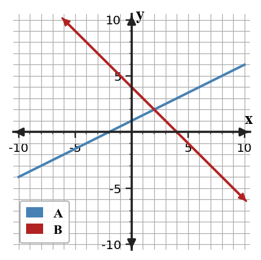

In $y=|x-6|+2$, identify the translated vertex.
The table comes from a translated quadratic. Identify the vertex and write a possible equation.
| $x$ | -3 | -2 | -1 | 0 | 1 |
|---|---|---|---|---|---|
| $y$ | 0 | 1 | 4 | 9 | 16 |
A solution to a system must make how many equations true?
Use the graph to estimate the solution, then verify it algebraically using the equations for lines A and B.

$$\begin{aligned}A:\; y&=\frac{1}{2}x+1\\B:\; y&=-x+4\end{aligned}$$
| $x$ | 0 | 1 | 2 |
|---|---|---|---|
| $y$ | -1 | 2 | 5 |
Which row gives the $y$-intercept?
| $x$ | 0 | 2 | 4 | 6 |
|---|---|---|---|---|
| $y$ | 3 | 9 | 15 | 21 |
Write a linear equation for the table and explain how you found the slope.